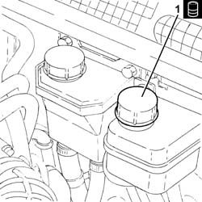
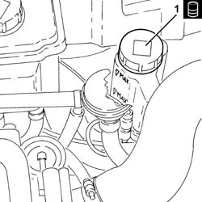
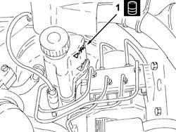

0010T64 BRAKE AND OR CLUTCH FLUID CHECK LEVEL AND TOP UP AS NECESSARY
- Path
- Procedures > 00 MAINTENANCE > 0010 UNITA' NUOVE E MANUT. PROGRAMMATA > 0010T VEHICLE OIL AND FLUIDS > 0010T64 BRAKE AND OR CLUTCH FLUID CHECK LEVEL AND TOP UP AS NECESSARY
- Kind
- repair procedure (removal / refitting; the operation number is the code)
- Applies to
- all engines; all production periods
- Interactive page
- https://sloeber94.github.io/elrnDB-aGt/en/#/125000844
Applies to: engines: 2.0 JTS; all production periods
Check that the brake/clutch fluid in the reservoir is at the maximum level; if this is not the case, top up using the recommended fluid.
Type | Component | Description | Qty. | |
|---|---|---|---|---|
- | Fluid [I] | BRAKE-CLUTCH HYDRAULIC SYSTEM | TUTELA CAR TOP 4 FOR ALFA ROMEO | 0.52 |
Applies to: engines: 3.2 V6; all production periods
1. Undo the cap and check that the fluid in the reservoir is at the maximum level; if this is not the case, top up using the recommended fluid.
Type | Component | Description | Qty. | |
|---|---|---|---|---|
1 | Fluid [I] | BRAKE-CLUTCH HYDRAULIC SYSTEM | TUTELA CAR TOP 4 FOR ALFA ROMEO | 0.52 |

Applies to: engines: 1.9 JTD 16V; all production periods
Proceed with removal Refer to op. 1016A10 SOUNDPROOFING COVER - R&R
.
1. Undo the cap and check that the fluid in the reservoir is at the maximum level; if this is not the case, top up using the recommended fluid.
Type | Component | Description | Qty. | |
|---|---|---|---|---|
1 | Fluid [I] | BRAKE-CLUTCH HYDRAULIC SYSTEM | TUTELA CAR TOP 4 FOR ALFA ROMEO | 0.52 |

Applies to: engines: 1.9 JTD 16V; all production periods
Proceed with refitting Refer to op. 1016A10 SOUNDPROOFING COVER - R&R
.
Applies to: engines: 1.8 T.SPARK; all production periods
- Check that the brake/clutch fluid in the reservoir is at the maximum level; if this is not the case, top up using the recommended fluid.
Type | Component | Description | Qty. | |
|---|---|---|---|---|
1 | Fluid [I] | BRAKE-CLUTCH HYDRAULIC SYSTEM | TUTELA CAR TOP 4 FOR ALFA ROMEO | - |

Topics that link to this page (37)
- F10 EXCESSIVE BRAKE PEDAL FREE PLAY
- X20 BRAKE FLUID LEAKS
- 0010K20 20,000KM SERVICE COUPON, EMISSION CONTROL VERSION
- 0010K40 40,000KM SERVICE COUPON, EMISSION CONTROL VERSIONS
- 0010K60 60,000KM SERVICE COUPON - EMISSION CONTROL VERSIONS
- 0010K80 80,000KM SERVICE COUPON - EMISSION CONTROL VERSIONS
- 0010M01 100,000KM SERVICE COUPON, EMISSION CONTROL VERSIONS
- 0010M20 120,000KM SERVICE COUPON, EMISSION CONTROL VERSIONS
- 0010M40 140,000KM SERVICE COUPON - EMISSION CONTROL VERSIONS
- 0010M60 160,000KM SERVICE COUPON - EMISSION CONTROL VERSIONS
- 0010M80 180,000KM SERVICE COUPON - EMISSION CONTROL VERSIONS
- 1810A20 CLUTCH - R + R
- 1820B20 MASTER CYLINDER (PUMP) - R + R
- 1820B30 SLAVE CYLINDER - R + R
- 1820B40 HOSE FROM CLUTCH RESERVOIR TO MASTER CYLINDER (PUMP) - R + R
- 1820B54 HOSE FROM DAMPER - R R
- 1820B58 CLUTCH HYDRAULIC CIRCUIT VIBRATION DAMPER - R+R
- 1820B59 SMORZATORE DI VIBRAZIONI CIRCUITO IDRAULICO FRIZIONE CON TUBAZIONI ENTRATA E USCITA - S.R.
- 2110A10 MANUAL GEARBOX AND DIFFERENTIAL - R + R
- 3310A14 FRONT DISC BRAKES - R.R.
- 3310A30 FRONT BRAKE CALIPER ONE R R
- 3310A48 FRONT BRAKE DISC - R R
- 3310A59 FRONT BRAKE DISC GUARD - R R
- 3330A10 FRONT OR REAR HYDRAULIC BRAKE SYSTEM - BLEED
- 3330C30 BRAKE FLUID RESERVOIR - R + R AND WASH INSIDE
- 3330D02 BRAKE SERVO/BRAKE PUMP ASSEMBLY - R R
- 3330E10 L/H OR R/H HOSE (ONE) TO FRONT BRAKE CALIPERS - R+R
- 3340A12 ABS HYDRAULIC AND ELECTRONIC CONTROL UNIT
- 3340A13 ABS CENTRAL MOUNT - R R
- 3340B52 PUMP/CENTRAL OBS PIPE - R R
- 3340B55 CENTRAL BRAKE PIPE TO LH - R R
- 3340B56 RIGID PIPE FROM HYDRAULIC CONTROL UNIT TO RIGHT FRONT BRAKE - R.R.
- 3340B62 REAR CONNECTION CENTRAL PIPE - R R
- 3340B67 RH BRAKE CONNECTION PIPE - R R
- 3340B69 RHP BRAKE CONNECTION PIPE - R R
- 3350A30 ASR TO CONTROL UNIT - R R
- 4450C10 FRONT PILLAR (ONE), L/H OR R/H COMPLETE WITH WHEEL HUB - R+R WITH WHEEL REMOVED - CHECK WHEEL GEOMETRY SEPARATELY